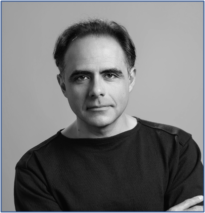

Operators
Risk control inside your product.
Focused solutions for teams using models in the products and workflows they run.
Explore our solutionsAbout EyeTrustAI
We quantify uncertainty and control error risk so AI can become a dependable part of the systems people rely on.
Our conviction
AI will increasingly shape high-stakes decisions and ordinary daily life. Its uncertainty is inherent. What matters is how we measure and manage it.
We use conformal prediction and conformal risk control to make the limits explicit: how much can be automated, what errors must be controlled, and what evidence supports the guarantee.
Our aim is to enable as much safe automation as the evidence supports, while limiting how AI mistakes affect the wider workflow.
Explore our researchWhat we are building
Operators
Focused solutions for teams using models in the products and workflows they run.
Explore our solutionsBuilders
A shared platform in development for adding calibrated outputs to the models you build.
Explore the platformThe founders

Tell us what you are building or operating.